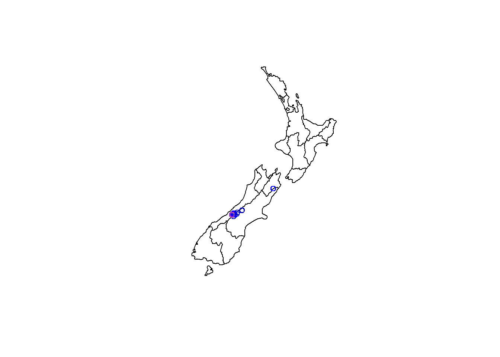
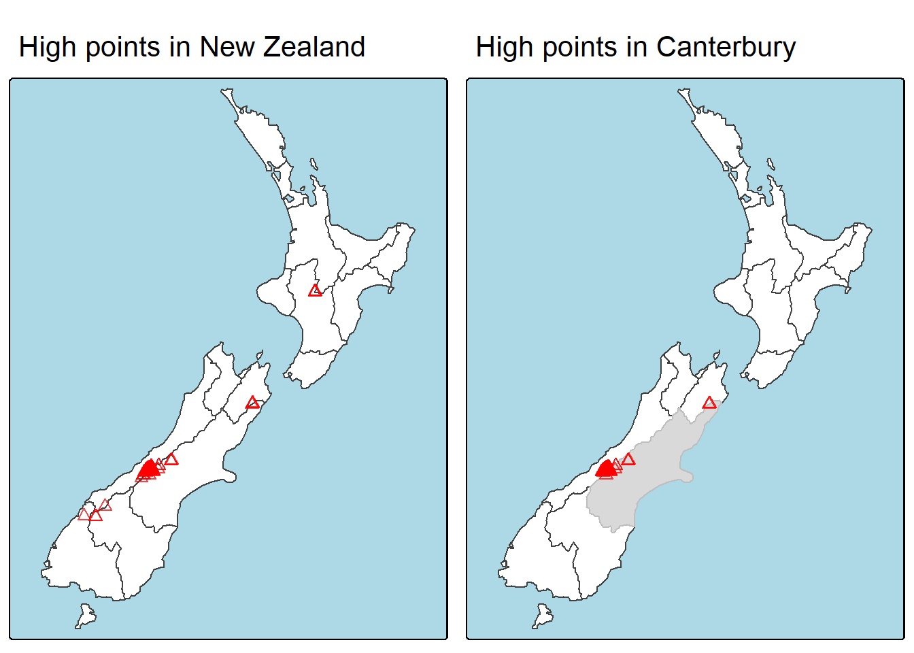
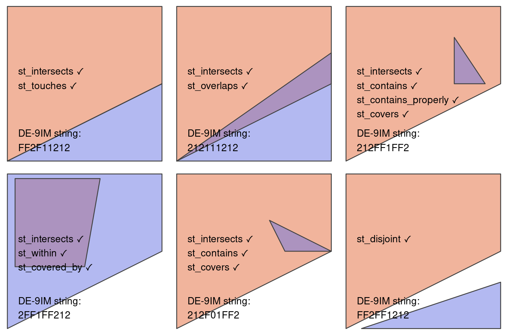
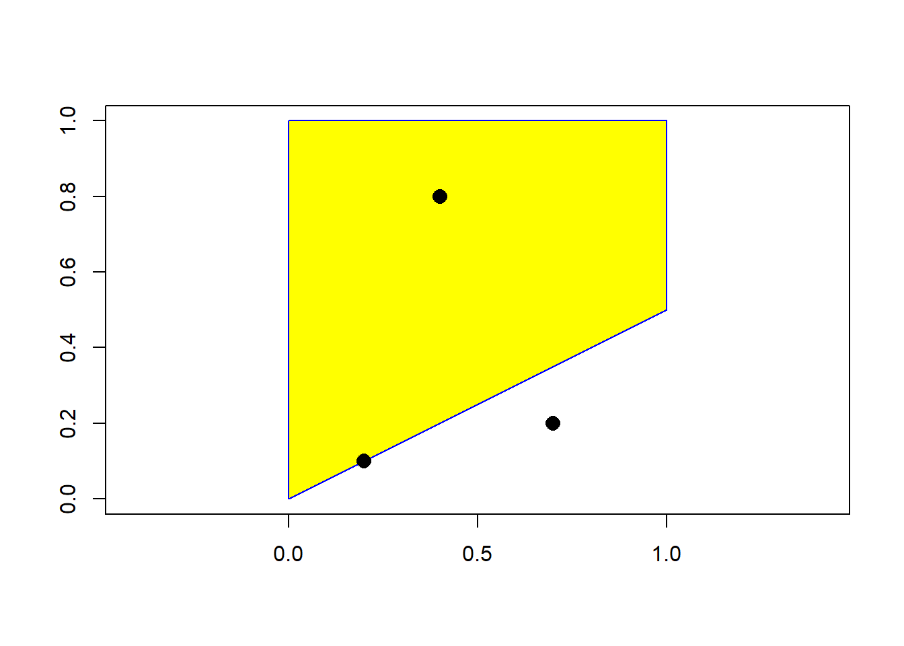
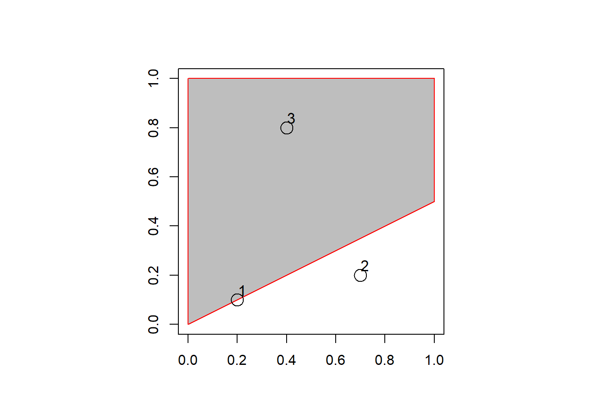

library(sf)
library(terra)
library(dplyr)
library(spData)
library(tmap)geoR-ch4
4 Spatial data operations
This chapter shows how spatial objects can be modified in a multitude of ways based on their location and shape.
Spatial operations differ from non-spatial operations in a number of ways, however: spatial joins, for example, can be done in a number of ways — including matching entities that intersect with or are within a certain distance of the target dataset — while the attribution joins can only be done in one way (except when using fuzzy joins).
4.2 Spatial operations on vector data
4.2.1 Spatial subsetting
Spatial subsetting is the process of taking a spatial object and returning a new object containing only features that relate in space to another object. Analogous to attribute subsetting, subsets of sf data frames can be created with square bracket ([) operator using the syntax x[y, , op = st_intersects], where x is an sf object from which a subset of rows will be returned, y is the ‘subsetting object’ and , op = st_intersects is an optional argument that specifies the topological relation (also known as the binary predicate) used to do the subsetting.
The default topological relation used when an op argument is not provided is st_intersects(): the command x[y, ] is identical to x[y, , op = st_intersects] shown above but not x[y, , op = st_disjoint]
The filter() function from the tidyverse can also be used, but this approach is more verbose, as we will see in the examples below.
To demonstrate spatial subsetting, we will use the nz and nz_height datasets in the spData package, which contain geographic data on the 16 main regions and 101 highest points in New Zealand, respectively, in a projected coordinate reference system.
class(nz)[1] "sf" "data.frame"canterbury <- nz |> filter(Name == "Canterbury")
canterbury_height <- nz_height[canterbury, ]
plot(nz$geom, reset = FALSE)
plot(canterbury_height[, "elevation"], add = TRUE)
p_hpnz1 = tm_shape(nz) +
tm_polygons(fill = "white") +
tm_shape(nz_height) +
tm_symbols(shape = 2, col = "red", size = 0.5, col_alpha = 0.75) +
tm_title("High points in New Zealand") +
tm_layout(bg.color = "lightblue")
p_hpnz2 = tm_shape(nz) +
tm_polygons(fill = "white") +
tm_shape(canterbury) +
tm_fill(col = "gray") +
tm_shape(canterbury_height) +
tm_symbols(shape = 2, col = "red", size = 0.5, col_alpha = 0.75) +
tm_title("High points in Canterbury") +
tm_layout(bg.color = "lightblue")
tmap_arrange(p_hpnz1, p_hpnz2, ncol = 2)
Objects used for spatial subsetting in this way must have the class sf or sfc: both nz and nz_height are geographic vector data frames and have the class sf, and the result of the operation returns another sf object representing the features in the target nz_height object that intersect with (in this case high points that are located within) the canterbury region.
Another way of doing spatial subsetting uses objects returned by topological operators. These objects can be useful in their own right, for example when exploring the graph network of relationships between contiguous regions, but they can also be used for subsetting, as demonstrated in the code chunk below.
sel_sgbp <- st_intersects(x = nz_height, y = canterbury)
class(sel_sgbp)[1] "sgbp" "list"sel_sgbp # sgbp objectSparse geometry binary predicate list of length 101, where the
predicate was `intersects'
first 10 elements:
1: (empty)
2: (empty)
3: (empty)
4: (empty)
5: 1
6: 1
7: 1
8: 1
9: 1
10: 1sel_logical <- lengths(sel_sgbp) > 0 # which is then converted to logical vector
canterbury_height2 <- nz_height[sel_logical, ]The above code chunk creates an object of class sgbp (a sparse geometry binary predicate, a list of length x in the spatial operation) and then converts it into a logical vector sel_logical (containing only TRUE and FALSE values, something that can also be used by dplyr’s filter function). The function lengths() identifies which features in nz_height intersect with any objects in y.
The same result can be also achieved with the sf function st_filter() which was created to increase compatibility between sf objects and dplyr data manipulation code:
canterbury_height3 <- nz_height |>
st_filter(y = canterbury, .predicate = st_intersects)The next section explores different types of spatial relation, also known as binary predicates, that can be used to identify whether or not two features are spatially related or not.
4.2.2 Topological relations
Topological relations describe the spatial relationships between objects. “Binary topological relationships”, to give them their full name, are logical statements (in that the answer can only be TRUE or FALSE) about the spatial relationships between two objects defined by ordered sets of points (typically forming points, lines and polygons) in two or more dimensions.

While the relations equals, intersects, crosses, touches and overlaps are symmetrical, meaning that if function(x, y) is true, function(y, x) will also be true, relations in which the order of the geometries are important such as contains and within are not.
To see how topological relations work in practice, let’s create a simple reproducible example
polygon_matrix = cbind(
x = c(0, 0, 1, 1, 0),
y = c(0, 1, 1, 0.5, 0)
) # начинается с нулей, нулями заканчивается
class(polygon_matrix)[1] "matrix" "array" polygon_sfc = polygon_matrix |> list() |> st_polygon() |> st_sfc()
class(polygon_sfc)[1] "sfc_POLYGON" "sfc" We will create additional geometries to demonstrate spatial relations with the following commands which, when plotted on top of the polygon created above, relate in space to one another.
Note the use of the function st_as_sf() and the argument coords to efficiently convert from a data frame containing columns representing coordinates to an sf object containing points:
point_df = data.frame(
x = c(0.2, 0.7, 0.4),
y = c(0.1, 0.2, 0.8)
)
point_sf <- st_as_sf(point_df, coords = c("x", "y"))A simple query is: which of the points in point_sf intersect in some way with polygon polygon_sfc? This question can be answered with the spatial predicate st_intersects() as follows:
plot(polygon_sfc, border = 'blue', col = 'yellow', axes = TRUE)
plot(point_sf, col = 'black', add = TRUE, pch = 16, cex = 1.5)
st_intersects(point_sf, polygon_sfc)Sparse geometry binary predicate list of length 3, where the predicate
was `intersects'
1: 1
2: (empty)
3: 1The result should match your intuition: positive (1) results are returned for the first and third point, and a negative result (represented by an empty vector) for the second are outside the polygon’s border. What may be unexpected is that the result comes in the form of a list of vectors. This sparse matrix output only registers a relation if one exists, reducing the memory requirements of topological operations on multi-feature objects. As we saw in the previous section, a dense matrix consisting of TRUE or FALSE values is returned when sparse = FALSE.
polyg_point_inters <- st_intersects(point_sf, polygon_sfc, sparse = FALSE)In the above output each row represents a feature in the target (argument x) object, and each column represents a feature in the selecting object (y). In this case, there is only one feature in the y object polygon_sfc so the result, which can be used for subsetting.
par(pty = "s")
plot(polygon_sfc, border = "red", col = "gray", axes = TRUE)
plot(point_sf, add = TRUE, lab = 1:4, cex = 2)
text(point_df[, 1] + 0.02, point_df[, 2] + 0.04, 1:3, cex = 1.1)
polygon_sfc[polyg_point_inters]Geometry set for 2 features (with 1 geometry empty)
Geometry type: POLYGON
Dimension: XY
Bounding box: xmin: 0 ymin: 0 xmax: 1 ymax: 1
CRS: NAPOLYGON ((0 0, 0 1, 1 1, 1 0.5, 0 0))POLYGON EMPTYnzSimple feature collection with 16 features and 6 fields
Geometry type: MULTIPOLYGON
Dimension: XY
Bounding box: xmin: 1090144 ymin: 4748537 xmax: 2089533 ymax: 6191874
Projected CRS: NZGD2000 / New Zealand Transverse Mercator 2000
First 10 features:
Name Island Land_area Population Median_income Sex_ratio
1 Northland North 12500.561 175500 23400 0.9424532
2 Auckland North 4941.573 1657200 29600 0.9442858
3 Waikato North 23900.036 460100 27900 0.9520500
4 Bay of Plenty North 12071.145 299900 26200 0.9280391
5 Gisborne North 8385.827 48500 24400 0.9349734
6 Hawke's Bay North 14137.524 164000 26100 0.9238375
7 Taranaki North 7254.480 118000 29100 0.9569363
8 Manawatu-Wanganui North 22220.608 234500 25000 0.9387734
9 Wellington North 8048.553 513900 32700 0.9335524
10 West Coast South 23245.456 32400 26900 1.0139072
geom
1 MULTIPOLYGON (((1745493 600...
2 MULTIPOLYGON (((1803822 590...
3 MULTIPOLYGON (((1860345 585...
4 MULTIPOLYGON (((2049387 583...
5 MULTIPOLYGON (((2024489 567...
6 MULTIPOLYGON (((2024489 567...
7 MULTIPOLYGON (((1740438 571...
8 MULTIPOLYGON (((1866732 566...
9 MULTIPOLYGON (((1881590 548...
10 MULTIPOLYGON (((1557042 531...